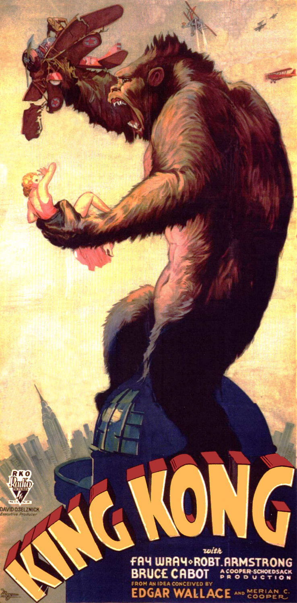

The Black Kingkong
clor black King Kong is a fictional monster, resembling an enormous gorilla, that has appeared in various media since 1933. He has been dubbed The Eighth Wonder of the World, a phrase commonly used within the films. His first appearance was in the novelization of the 1933 film King Kong from RKO Pictures, with the film premiering a little over two months later
directions to the lair of
- kingkong
- honkkonk
- china
- woohan

Link back to the index